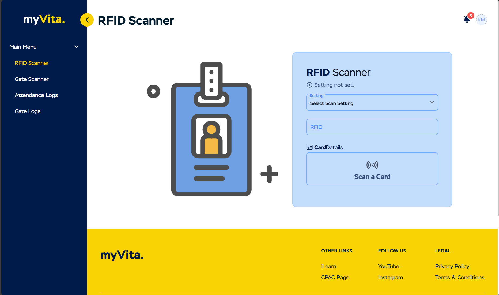
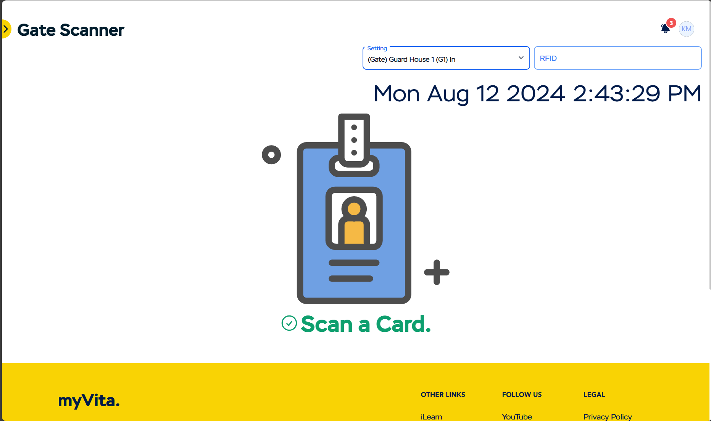
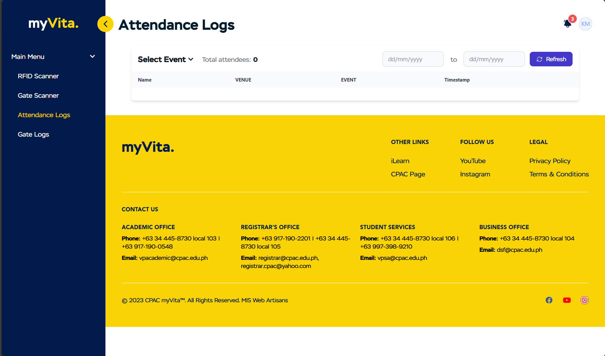
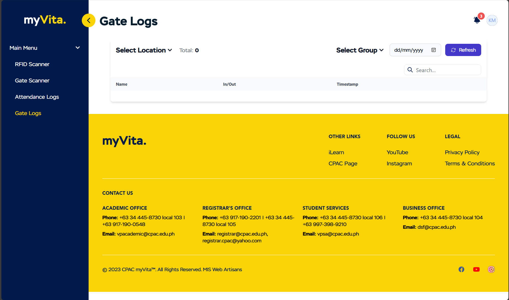

PORTFOLIO
RFID Scanner Module
Made by Kaiser




Description
The project began as a solution to monitor student attendance during on-campus events but later evolved to include campus gate traffic tracking, including attendance and gate logs that update whenever a new entry is recorded. This experience led me to embrace a modular approach, grouping similar features into individual modules. Additionally, I designed a dynamic layout where the sidebar and navbar communicated effectively, ensuring that the correct module, title, and highlighted sidebar menu were displayed based on the user's selection. It was also during this project that I learned to work with WebSockets and real-time data.